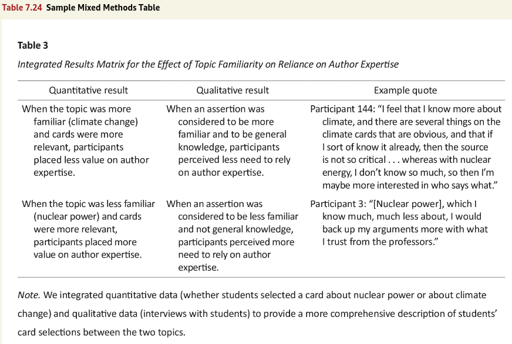

library(apa7)
library(flextable)
library(ftExtra)
library(tidyverse)
library(easystats)
library(lme4)
set_flextable_defaults(theme_fun = theme_apa,
font.family = "Times New Roman")Recreating APA Manual Table 7.24 in R with apa7
R
APA Style
Demonstration of the apa7 package, a flextable extension package
Making tables in APA style (Part 24 of 24)
In this 24-part series, each of the tables in Chapter 7 of the Publication Manual of the American Psychological Association (7th Edition) is recreated with apa7, flextable, easystats, and tidyverse functions.
NoteHighlights
- Use of
hanging_indent
Figure 1
Screenshot of the APA Manual’s Table 7.24

Making this table was relatively straightforward, except that I needed to play with the column widths and hanging indents until they fit in a table that is 6.5 inches wide.
```{r}
#| label: tbl-724
#| tbl-cap: "Integrated Results Matrix for the Effect of
#| Topic Familiarity on Reliance on Author Expertise"
#| apa-note: "We integrated quantitative data (whether
#| students selected a card about nuclear power
#| or about climate change) and qualitative data
#| (interviews with students) to provide a more
#| comprehensive description of students’ card
#| selections between the two topics."
tibble(
`Quantitative result` = c(
paste("When the topic was more (climate change) and",
"cards were more relevant, participants placed",
"less value on author expertise."),
paste("When the topic is less familiar (nuclear power)",
"and cards were more relevant, participants",
"placed more value on author expertise.")),
`Qualitative result` = c(
paste("When an assertion was considered to be more",
"familiar and to be general knowledge,",
"participants perceived less need to rely on",
"author expertise."),
paste("When an assertion was considered to be less",
"familiar and not general knowledge,",
"participants perceived more need to rely on",
"offer as brief expertise author expertise.")),
`Example quote` = c(
paste("Participant 144: \"I feel that I know more",
"about climate, and there are several things",
"on climate cards that are obvious, and that",
"if I sort of know it already, then the source",
"is not so critical... whereas with nuclear",
"energy. I don't know so much, so then I may",
"be more interested in who says what.\""),
paste("Participant 3: \"[Nuclear power], which I know",
"much, much less about, I would back up my",
"arguments more with what I trust from the",
"professors.\""))
) |>
mutate(
`Quantitative result` = hanging_indent(
`Quantitative result`, width = 25),
`Qualitative result` = hanging_indent(
`Qualitative result`, width = 25),
`Example quote` = hanging_indent(
`Example quote`, width = 32)) |>
apa_flextable(line_spacing = 1.5, font_size = 12) |>
align() |>
width(width = c(2,2,2.5))
```Table 1
Integrated Results Matrix for the Effect of Topic Familiarity on Reliance on Author Expertise
Quantitative result | Qualitative result | Example quote |
|---|---|---|
When the topic was more | When an assertion | Participant 144: “I feel that |
When the topic is less | When an assertion was | Participant 3: “[Nuclear power], |
Note. We integrated quantitative data (whether students selected a card about nuclear power or about climate change) and qualitative data (interviews with students) to provide a more comprehensive description of students’ card selections between the two topics.